2019/0331Sun4時間で恥ずかしくないの
大阪全国握手会
有難うございました☺️
この前、ユニバーサルさんに友人と遊びに行ってきました
後日、沢山写真とったから
ユニバーサルさんの感想ブログに書こう
ひとまず、大阪と言う事で
少しだけ画像を
ユニコーンが大好きユニ、ユニ、ユニコーン♫
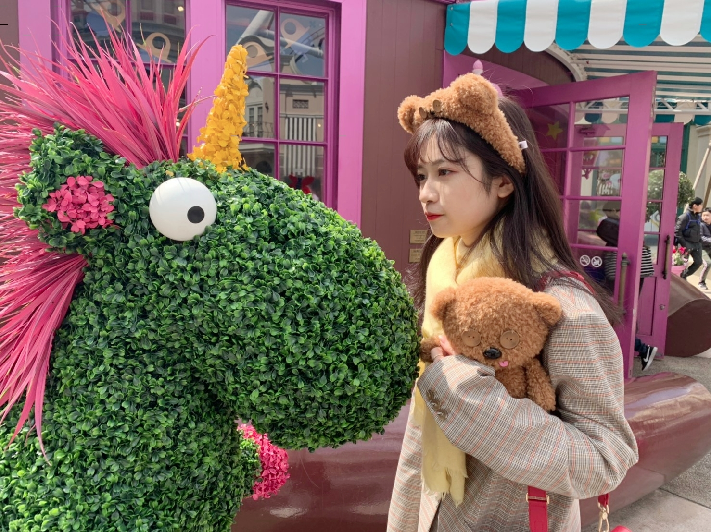
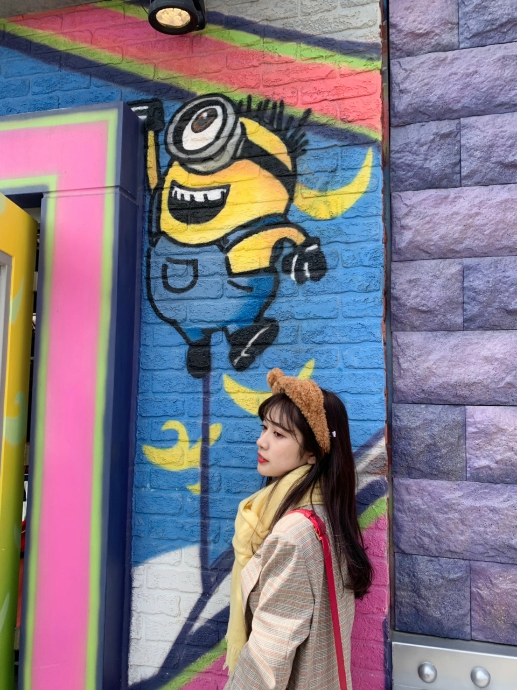
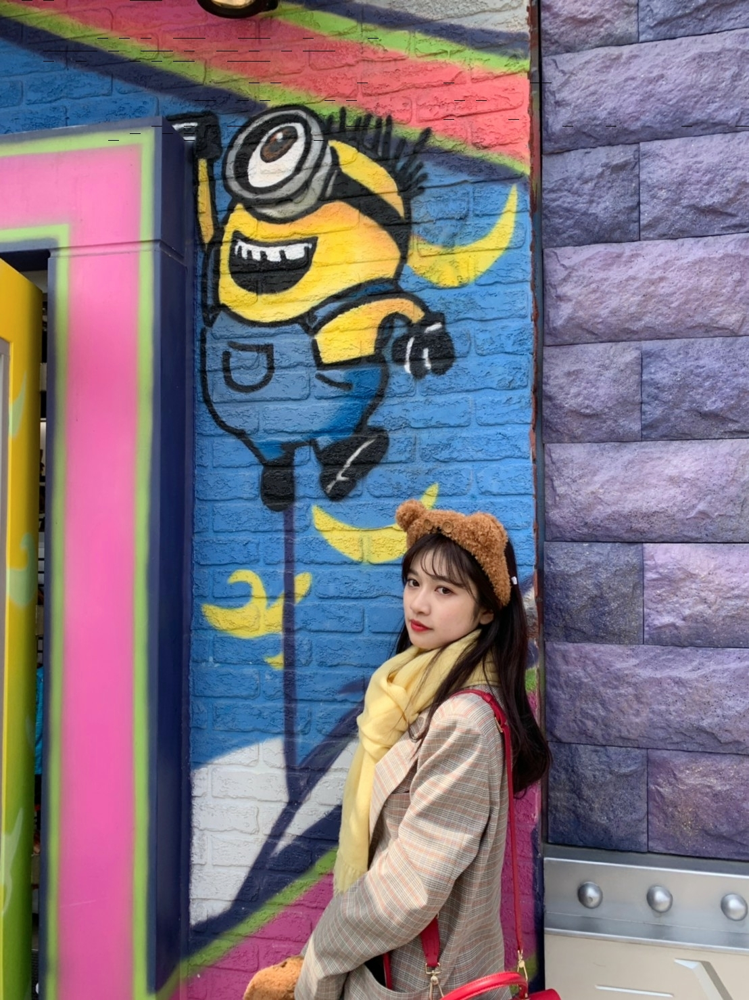
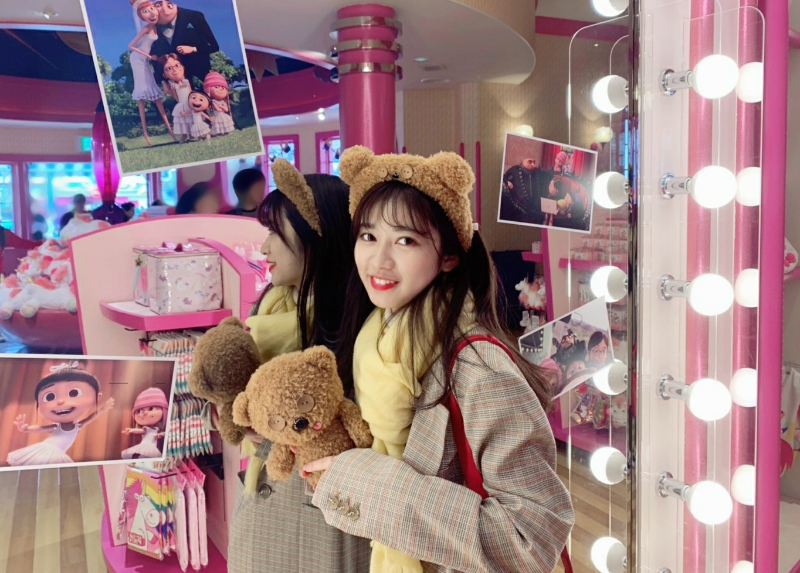
ティム‼‼
改めて、握手会
今日は寒いなか待って下さり本当にありがとうございます
寒かったね、私もずっと手と足が寒かったですm(_ _)m
ミニライブでは
さゆりんご軍団でゲリラ的に一曲
かりんちゃんの最後にさゆりんご軍団の活動出来て良かった
みささん
ゆうりさんにとっても
ラスト
お疲れ様でした‼
ミニライブ本編は
帰り道
日常
キャラバン
参加させて頂きました
自分のポジションは勿論
今日は、生田ぴんのポジションでしたが
帰り道は5、6ポジションくらいやってどれがどれだかこんがらがった
ですが、こうやって表題曲でも
フロントのポジションも任せてもらえるようになった事に
ふと、成長を感じました、、、‼
凄く大変な事だけど
あり得ないくらい対応力付きますよ
今では4日間のbirthdayLIVEの膨大な立ち位置もすぐ覚えられたし
振り入れも元から覚えるの得意な方ではありましたが
より、早くなりました
将来、活かされるかも
日常
なんか今日凄く踊りたい気分の私だったのですが
まあやがイントロの蘭世良かったよーって終わった後直接声かけて下さってダンス上手なまあやに褒められたの嬉しかったよ‼
キャラバン、ユニット曲に参加できて嬉しかったです
今回のユニット曲は耳に残る
合計4曲
こんなに、ライブ出たメンバーいるかな(^・^)
そして、ザンビ
今日も握手会の話題に沢山上がりました
乙女神楽やらも気になりますが
こちらも沢山沢山撮影しました
武器をもっているのですが
非日常的で楽しかったです(^^)
ザンビ
約1年前
乃木神社にお祓いにいって
本読みも全てが初めて尽くしで
演技はずっと遠い存在だと思っていたし
1つ1つ緊張や不安の方が多かったことを覚えてます。
撮影数週間くらいは
毎日毎日一緒に居たメンバー
今思い返すと凄く心地良いメンバーでした
そして、寒かったm(_ _)m
１話やら前半の山道はこの季節凄く寒かった事を覚えています
皆でダウン着て頑張りました
瀬奈がジャージに着替えた頃から
去年、舞台乃木坂46版ミュージカル美少女戦士セーラームーンの
お稽古期間とかぶっており
毎日、違う自分で
自分らしさでなく
それぞれの
瀬奈
レイちゃん
交互に行き来する毎日でした
これも初めての経験で不思議な気持になりました。
ですが、私も瀬奈ちゃんもレイちゃんも
3人とも熱くて誰かの為に戦うぞって姿勢が共通していて
どう言葉にすればいいのか難しいけど
出会えて良かったと今は思っています。
怖いだけでなく友情
人間関係をえがいたドラマ
制服を着れたのも嬉しかったです。
本編では少しでしたが
みんなでやったバスケット楽しかった(^・^)
一応、運動できるキャラだったので
張り切ってやってみたところ
シュートなら出来ることが判明したり
調理実習の時間も覚えてる
みなみちゃんにウインナーをハート型に切る方法を教えたり
初めてのバスのシーンも
自撮りが苦手な瀬奈ちゃんって設定をつくったり
人生初めてのカラーコンタクト
コンタクトレンズ自体が初めてだったのですが
人生初めてがあんなに分厚いカラーコンタクト
でも、なかなか良きでした
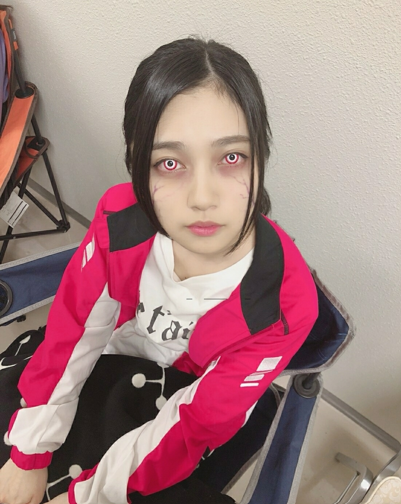
与田ちゃんが撮ってくれた
特殊メイクさんが
瀬奈ちゃんザンビ推しですって
言ってくださったの嬉しかったです(^^)
血管メイク気にいって沢山自撮りしたのも懐かしい
フィッティングのとき
何着か候補があったなか
赤がしっくりくるって決まった
赤いジャージも良き
撮影してた頃は
来年の冬から放送なんて
まだまだまだ先の事で自分達どうなってるんだろうねーって
話してたのにあっという間に最終話まで無事放送も終え
舞台にゲーム
いろんなコンテンツが増えたなか
その中で、ドラマに長期間
関われた事がとても良い経験になりました
ありがとうございました
長期間だっからこそ
メイキングが楽しみだなと
もう、思い出話になるのか‼‼
平成最後なんですね
あまり、実感がありません
変わるものは常に注目されがちだけど
日々はかわらない積み重ねでてきています
年号かわる瞬間を見れるのは
昭和から平成を体験してないから
わくわくしますが(^・^)
平成最後の〇〇とか
あんまり、やらなかったな
明日も楽しい1日になりますように
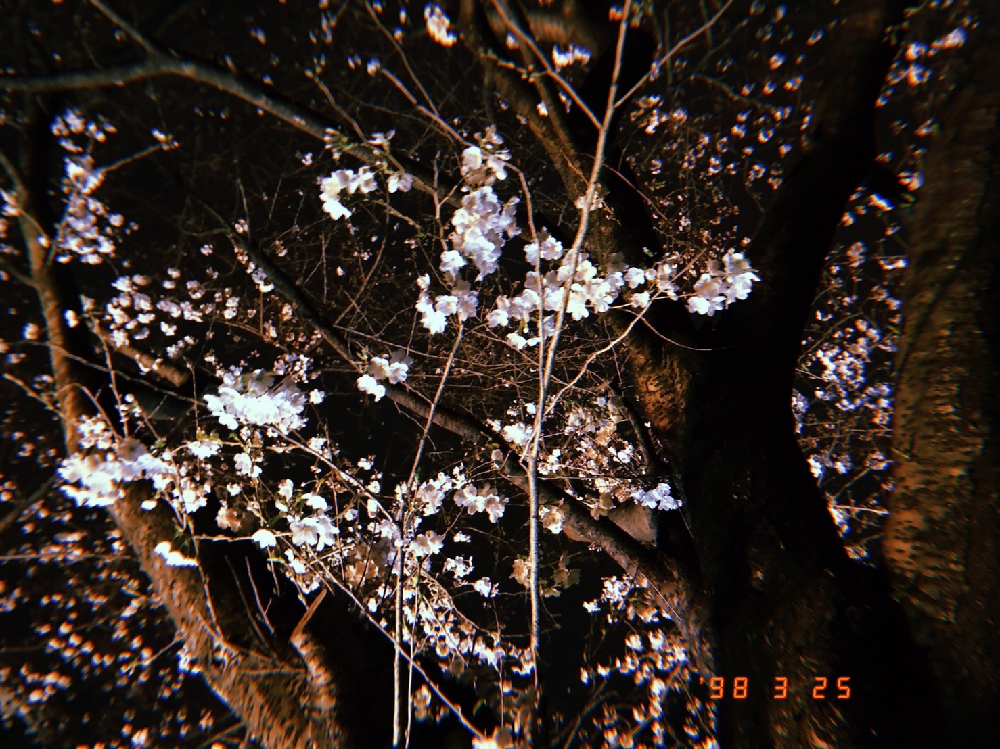
2019/0328Thuただ信じて走ってみよう
色々、書きたいのですが
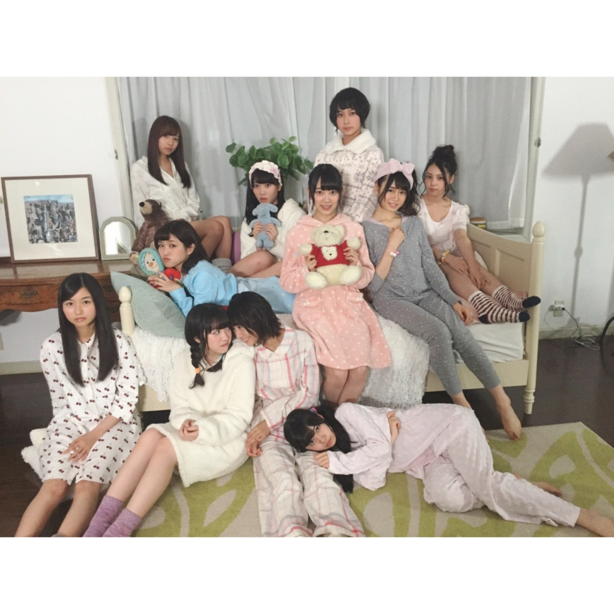
2期生、6周年おめでとうが1番大切なこと
6という数字
小学校入学から卒業くらいの長さ
ランドセルが背が大きくなり
小さく見える程の年月が経ったと思うと長く感じますよね
沢山、大変な事も多かった
悩んで悩んで悩んで
そんなとき笑わせてくれるのは
個性豊かな2期生です
だからこそ嬉しいことがあれば自分の事のように喜んでくれる
素直な2期生を私は愛おしく思います。
年上も多いけど
可愛い奴らだなって見てて微笑ましくなります。
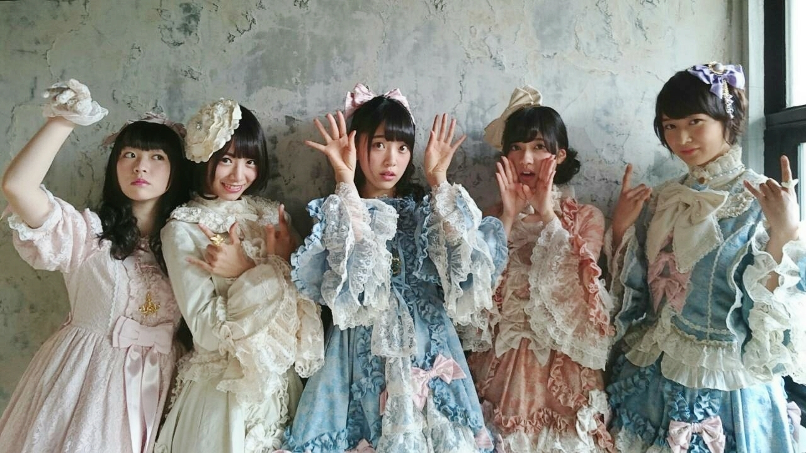 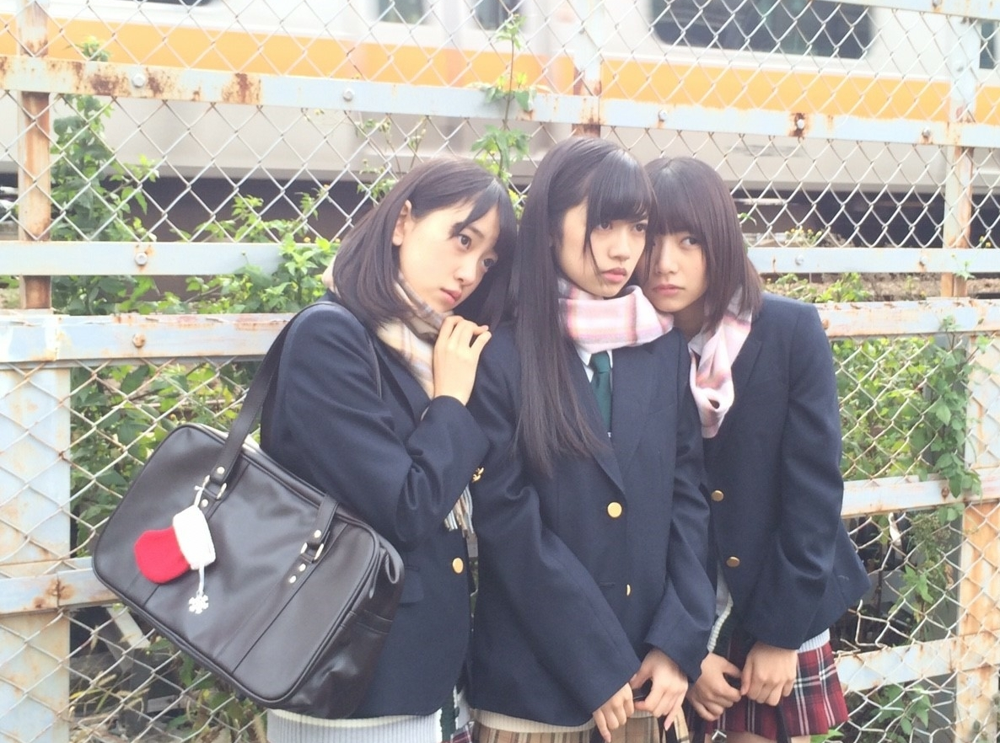
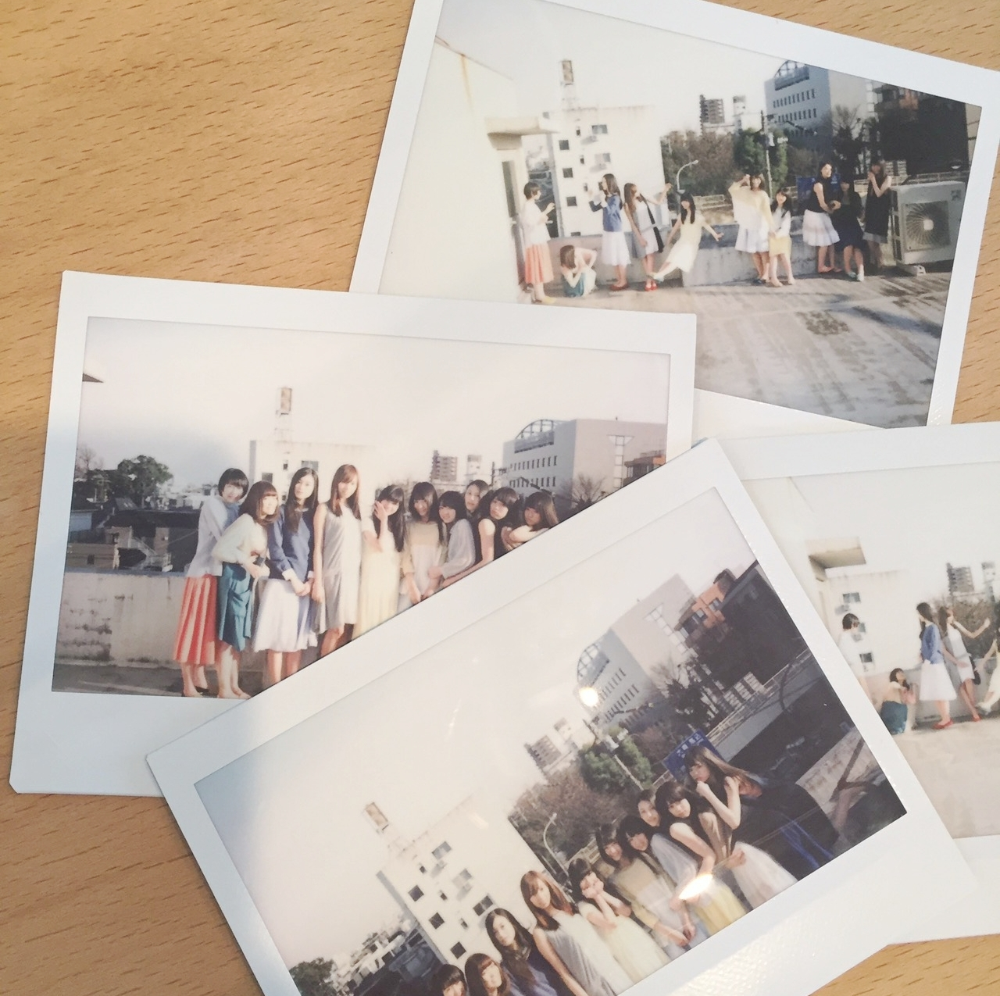
人生でこんなに真剣に自分の意思で長く続けられるものってなかなか無いんじゃないですかね
色んな場面で心を動かす2期生
誇りに思います。
おめでとう、私達
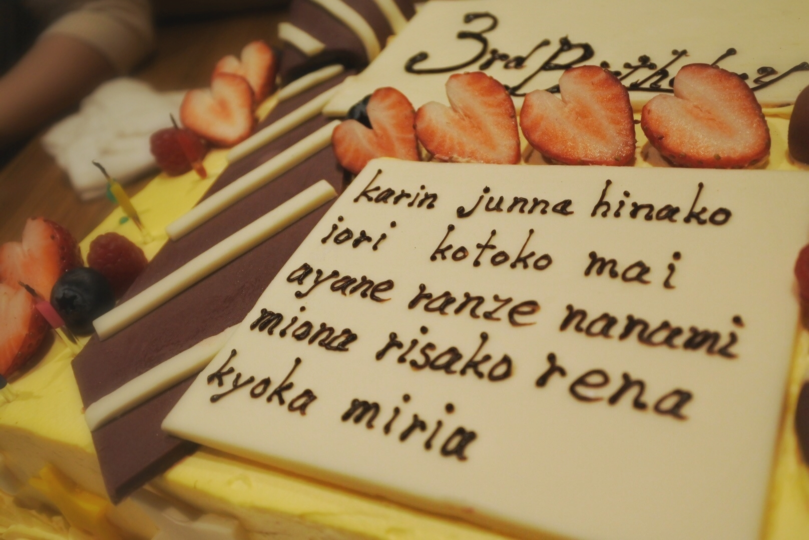
2019/0321Thuいいね以上の熱い想い
BUBKAさんのオフショットをあげなきゃ
ソログラビアさせて頂きました
2号連続で取材やら撮影やら有り難やですm(_ _)m
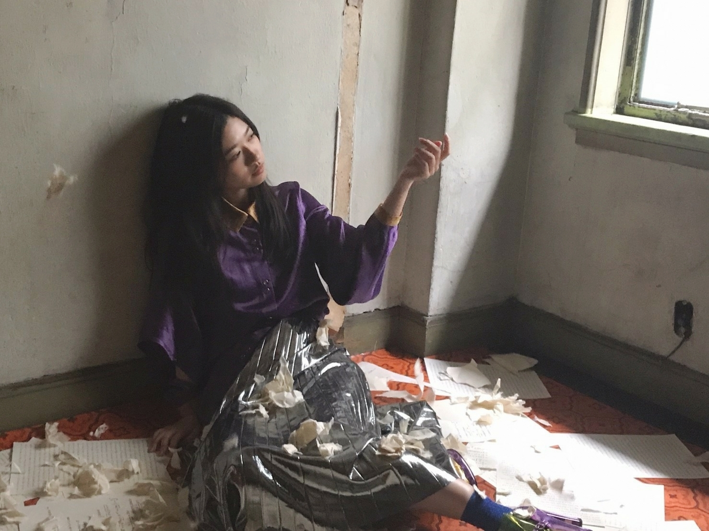
やっぱり、撮影好きだなーって
もし次があったら
のほほーんとした温泉とかで
撮影出来たらいいなーってあの日
現場で話した気がします
今回は凄く力強い雰囲気でした
なかなかパンチの効いたカラーのお洋服可愛かった‼
何でも
かわいいも
かっこいいも
何も型にハマらない人掴めない人でいたいです‼‼
毎日同じ髪型とか
イメージ通りのことしか出来ない
それも魅力的だけど
せっかく、発信することがお仕事の私達ですので
色んな姿をみせていきたいです(^・^)
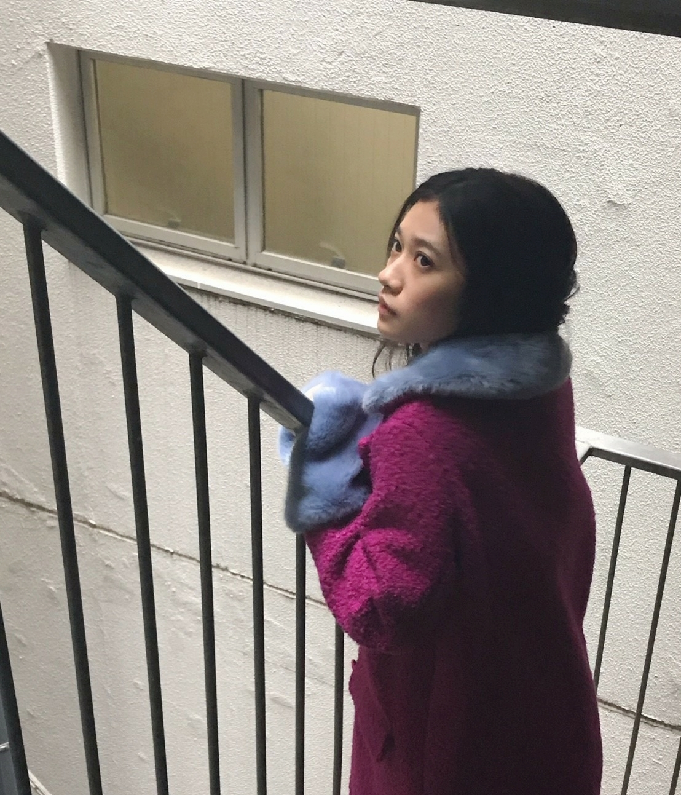
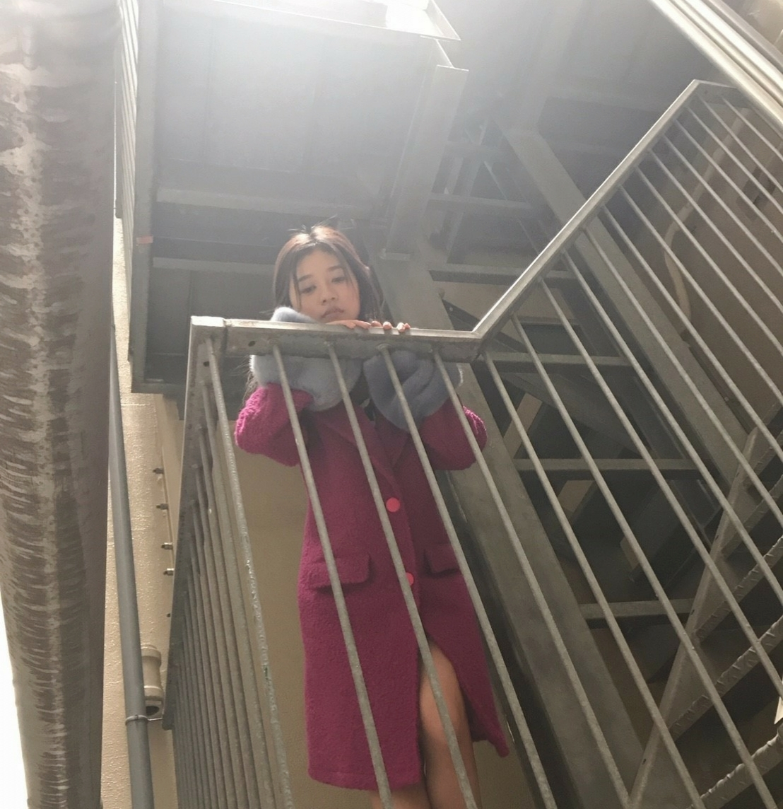
すごい角度m(_ _)m
ブルボン
フェットチーネグミCM
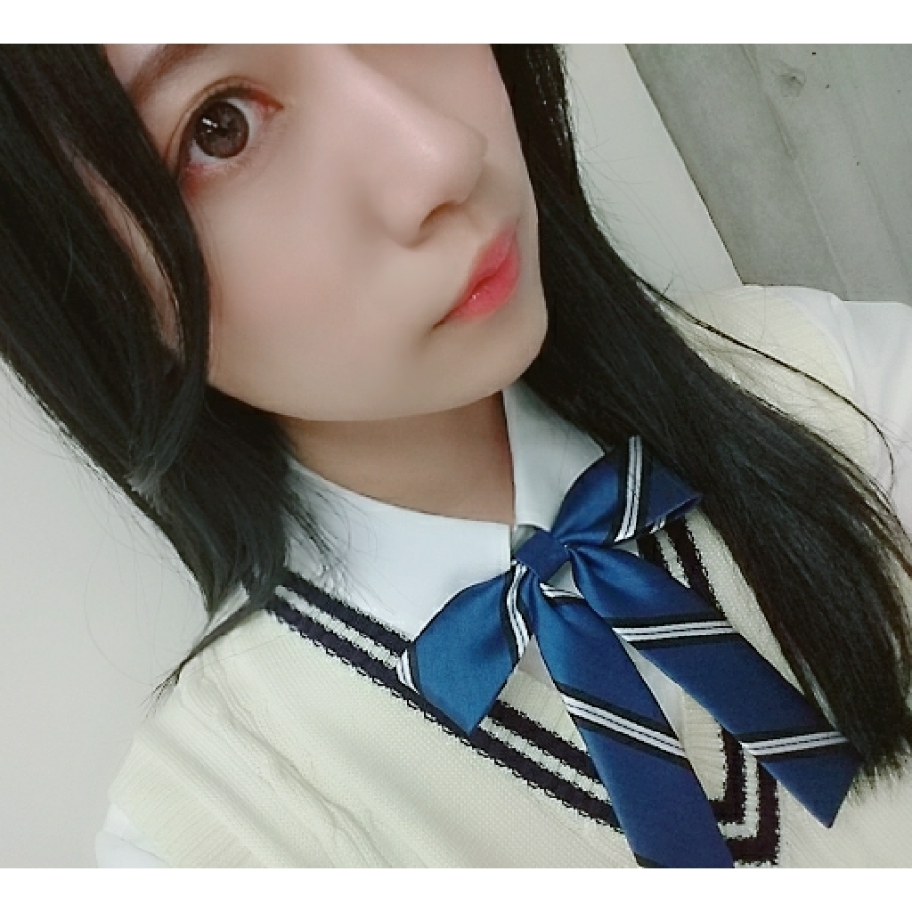
もう、2年目とかなんですね
有り難いです
現場のスタッフさんもいつものスタッフさん方でいつの間にかとても安心する場所になりました
お菓子大好きだから
楽屋にブルボンさんのお菓子たくさんあって幸せです毎回
2月から発売された温州みかん
プライベートで購入して食べてみたのですが美味しかった‼
乃木恋ともコラボしてて
CM撮影の合間に制服で沢山撮影しました
教室やら体育館やら
そちらも、宜しくお願いしますm(_ _)m
毎月さゆりんご軍団連載の
EX大衆さん
こちらも宜しくお願いします
テックトックは松村さん次第
割と、琴子が積極的に撮ろーって声かけてくれます。
ぜひ、TikTokで皆の全身姿見てください
凄くかっこつけてますそれがテーマでした。
また、撮ろうね
アルバムにて公式でさゆりんご軍団の新曲を頂きました!
もう、結成されて何年も経つのに
ずっと愛を持ってプロデュースしてくれる松村さん
そして、何処までもついてく私達3人
沢山お知らせできて嬉しいです
これからはもっともっと沢山皆さんに嬉しい報告できますように
チェック宜しくお願い致します
今日は、名古屋全国握手会
ライブもユニットもあるのでぜひ
握手会はれのちゃんとペア
前もした事あるよね
れのちゃんの世界観可愛いです
あと、最近の髪型も似合ってる
あと、ダンスも好きだな
宜しくお願いしますm(_ _)m
2019/0317Sun僕は流されない
全国握手会ありがとうございましたそして、お疲れ様でした。
朝から沢山待ってくれて有難う
握手会に来る為に沢山時間を掛けてくれて有難う
更に女の子とかには多いのかな
朝も早いけどしっかりメンバーを意識してくれたお洋服やメイクをみると会うために沢山時間を使ってくれてること
私達を思っての行動が目にみえて
私は人の細かな仕草とかも気になる人だから
メンバーを思ってくれた姿勢がみえるとより有難うって嬉しい気持ちになります
グッズとかも目に見える愛ですよね(^・^)
本当にありがとうございました
まだまだ寒い日もあります
風邪には手洗いうがい
花粉も洗い流しましょうー
栄養と水分はしっかりとって
あたたかくして寝てください
これからの人生も世界中の人に会いたい
それは一生かけても難しいけど
でも、このお仕事についたお陰で
たくさんの人に出会えていますよね?
海外での活動もそれぞれ増えて
今年も沢山の国や地域にお仕事でもプライベートでも行けますように(^・^)
もっと自分の求めてる世界へ
理想へ
発言していくのは本当に大変な事ですが
恐れず、自分で一つ一つ本質を見抜いて
誰かに決められるのでなく
自分で選んで進んでいきたいです。
なんで、いつも壮大なスケールのお話になってしまうのでしょうか(^・^)
でも、本気です何事も
いつもありがとうございます
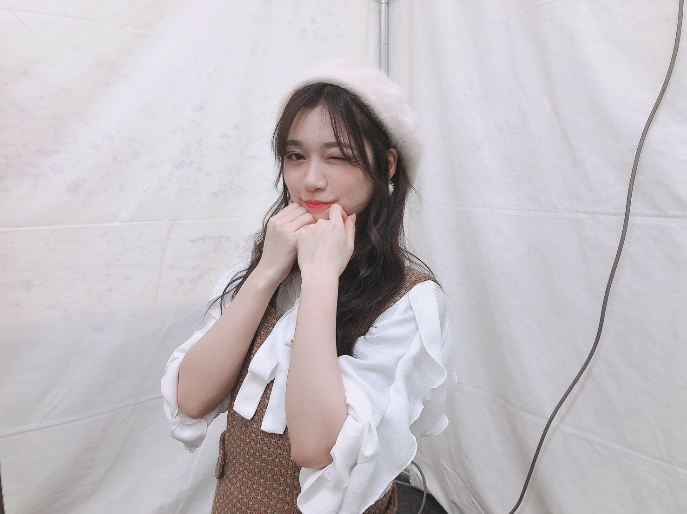
梅ピヨにスーパーぶりっ子してみたところ
数年に1回ぶりっ子したくなる瞬間がある、、、
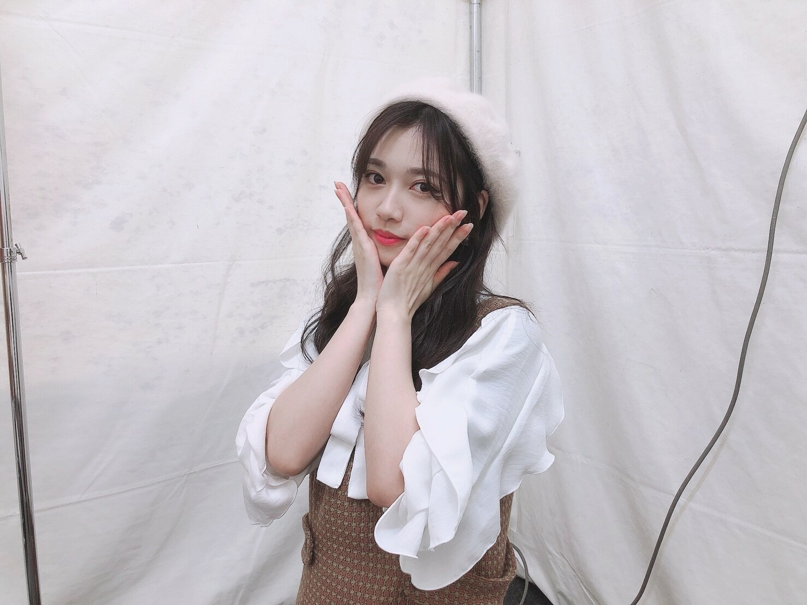
あー、そういえばようやくアニメを観れました
かぐや様は告らせたい観れました
やっぱり、アニメは面白い
あのテンションのアニメ好き好き
本日、名古屋にて個別握手会お願いします!
らじらー！
2019/0307Thuスカイダイビング改めて夏らしさもありつつ可愛い曲だなーと思いました
ライブお疲れ様でした
4日間のバースデーライブは
想像を超えるほど体力と時間をかけました
次の日記憶を飛ばすほど寝込んでしまいましたがそろそろ気を取り直してm(__)m
と思ったらいつの間にか
ほんのり春の空気を感じで
花粉がまってて
顔も喉もムズムズしてきて
春は春とて大変ですよね
お互い、頑張っていきましょう
ひとまず、おおきな節目のライブ
完走しきれて良かったです。
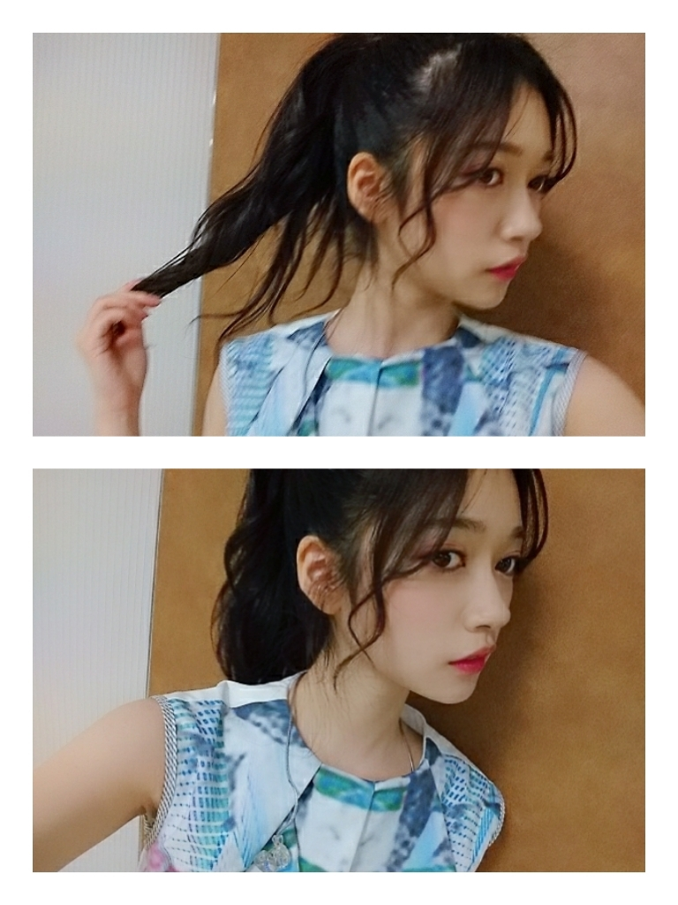
必死のポニーテールアピール
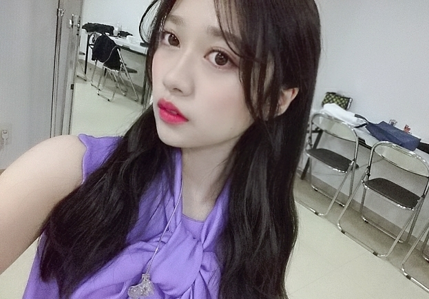
感想を
私は特に2日目が濃ゆかったです
ボーダーは何回披露しても全身震えます
昔からしっかり者の純奈と
ボーダー披露前に必ずと言っていいほど
ボーダーだけは何年経っても
緊張するねって話すのがルーティンなくらいに
そわそわしながら6人で待機してます
でも、真剣に向き合ってて
大切に思っているからこそ緊張ってするものだから
それは私達が頑張ってきた証だと思います。
バースデーライブでは過去を思い出して嬉しかったこと悔しかったことを思い出して本番前泣きそうって目を赤らめる事も沢山あったライブでしたが
ステージに立てば責任感や緊張で
涙は出なくて
でも、歌詞やメロディーに感情をのせれば
いつも、歌ってる自分ですらも
音楽に助けられてます
音楽の強さを感じられます。
この大きなパワーを皆さんにも届けていきたいです。
すみません、、、
昇格したあの日付に送る予定のブログでした
2月に送ろうとしたのに
バタバタしてたらあっという間に
3月を迎えて
おそろしいm(__)m
とにかく毎日、4時間にもわたるLIVE
本番前後の時間は沢山のスタッフさんメンバーが寝る間も惜しむ勢いで頑張ってました。
限られた曲数と時間で
皆さんと目あったかな
4日間何処に目を向けても温かい眼差しが向けられて
そして、寺田蘭世と刻まれたグッズを掲げてくれて
心から笑顔で優しくて楽しそうな眼差しを向けてくれて
初めて代々木に立ったとき
神宮球場に立ったとき
いつも大きくなっていくステージにタジタジなうえ
私の事なんて知ってくれてるのかなって心細く心配になるライブもありました。
初めての握手会の様子
オーディション映像
初めてのステージ
沢山、歴史を振り返るライブでした。
4日間で自分の歴史
成長を感じることができました‼
1期生2期生はオリジナルにできるだけ忠実にと言う事で
あまり、ユニットなども代打にはたちませんでした
何だか、いつも代打や卒業メンバーの位置にもいるからオリジナルになると
自分でも頑張ったねって認めてあげたい気持ちと
今年はもう一歩大きく歩みたいなって気持ちがうまれました。
なんて、書いていいのか言葉にしていいのか難しいけど
4日間素敵なステージと向き合って思ったことは
出逢ってくれてありがとう
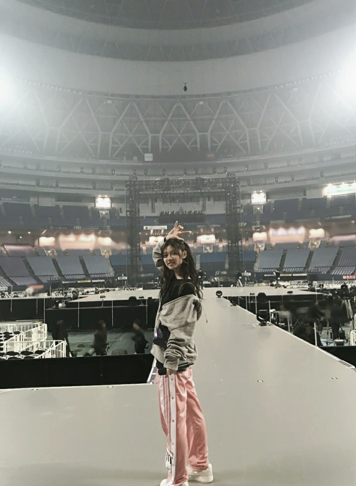
私も乃木坂46に出逢えてよかった
だから、乃木坂46らしさを大切にしたい
新しい世界もみたいし
皆さんと共有していきたいです。
西野さんお疲れ様でした
いつも自分を持ってて
これは好きこれは苦手だとハッキリ言える強さも持ってる人でした
私はそういう強さもあるのに
何だかふにゃーとしてる西野さんが好きでした(^・^)
ライブの終わらせ方や
皆が泣いてる中
ニコニコ清々しい笑顔
いつも通りの自然体な姿で卒業を迎えた
西野さんがらしいなと思い
私も泣かずに笑顔で送ることが出来ました
かりんちゃんがある日言ってくれたんだけど
蘭世とにゃー趣味にてるからもっと話せばいいのにって言ってくれて
確かに、今も凄く凄く西野さんに話したい事沢山あるんだ
本人に連絡しちゃお!!!
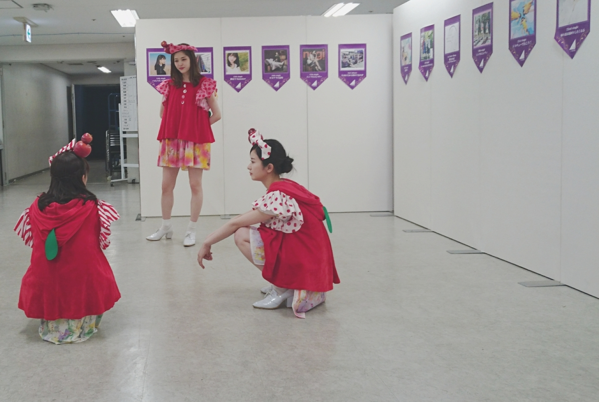
こっそり、隠し撮り
皆が話し合ってたのを遠目から
可愛い人達ですm(__)m
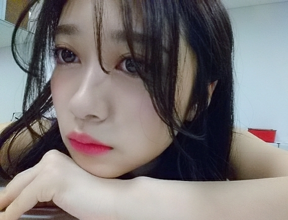